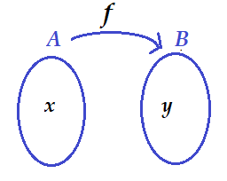
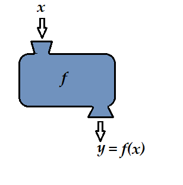
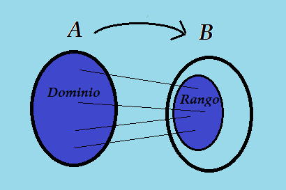
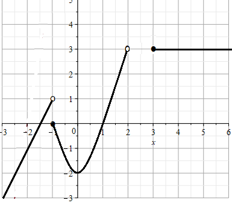
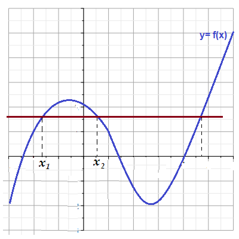
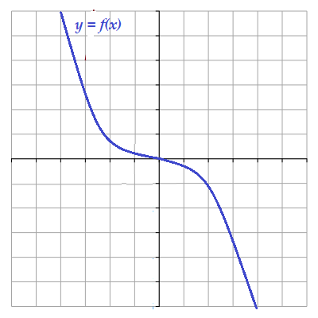
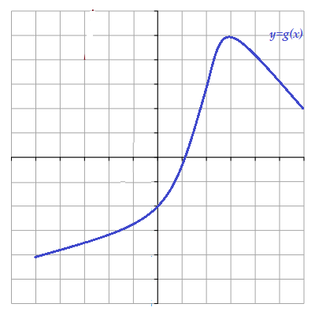
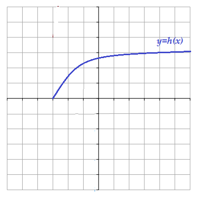

Auditoría e Ingeniería en Control de Gestión
Contador Público y Auditor
Logo Instituto
Una función de un conjunto \(A\) a un conjunto \(B\), es una regla de correspondencia que asigna a cada elemento \(x\) de \(A\) un único elemento \(y\) de \(B\).
Al conjunto \(A\) se dice que es el conjunto de entrada y a \(B\) el conjunto de salida.


Terminología:
Se acostumbra representar una función por un letra, por ejemplo \(f, \, g, \, \, h\). etc..
Se puede representar una función \(f\) de un conjunto \(A\) a un conjunto \(B\) mediante la notación \(\quad f: A \longmapsto B\)
Si \(x\in A\), \(y \in B\), verifican \(f(x) = y\), se dice que \(y\) es la imagen de \(x\) , \(x\) se dice preimagen de \(y\).
Si \(y=f(x)\), se dice también que \(x\) es la entrada e \(y\) la salida. También se dice que \(x\) es la variable independiente e \(y\) la variable dependiente.
Dadas las funciones
Dada una función \(f: A \longmapsto B\), entonces
El conjunto \(A\) se llama dominio de \(f\) y se denota por \(Dom(f)\)
El rango de \(f\) o recorrido de \(f\) denotado por \(Rango(f)\) o \(Rec(f)\), es el conjunto de todos \(y\) en \(B\) que tienen al menos una pre-imagen en \(A\).

Determinar el dominio de las siguientes funciones
La gráfica de una función \(f\), es la gráfica del conjunto de todos los pares ordenados \((x, f(x))\) del plano carteisano, donde \(x\) está en el dominio de \(f\)
Dada la función \(f(x) = 3x-1\), graficar algunos puntos de la gráfica de \(f\) e intuir la gráfica de \(f\)
Dada la gráfica de la función \(y=f(x)\)

Determinar
Dominio y recorrido de \(f\)
Calcular \(f(-2), \, f(-1), \, f(0), \, f(1), \, f(2), \, f(3), \, f(4), \,\)
Una función con dominio \(A\) se dice que es una función inyectiva o también función uno a uno, si no hay dos elementos de \(A\) que tengan la misma imagen, es decir:
Si \(x_1 \neq x_2\) entonces \(f(x_1) \neq f(x_2)\),
o alternativamente
Si \(f(x_1) = f(x_2)\) entonces \(x_1 = x_2\).
Probar que la función \(f(x) = 2x-3\) es una función inyectiva
Probar que la función \(f(x) = x^2\) no es una función inyectiva
Una función \(f\) es uno a uno si y sólo si, no hay una recta horizontal que cruce su gráfica más de una vez

Esta función no es inyectiva.
Determinar cuales de estas funciones es inyectiva



Determinar el dominio de cada una de las funciones y decidir cuales de ellas son inyectiva